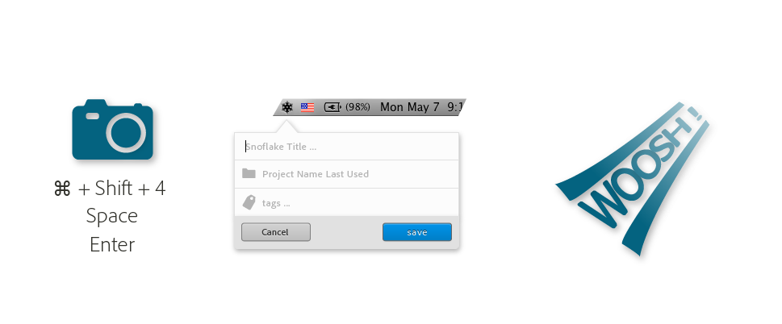

a solution?
Passive snowflake consumption &
a ridiculously frictionless sharing experience.
a designer walks into a bar
a designer walks into XD
- snowflakes in the innovation lab
- snowflakes on ipads
- snowflakes on second monitors
he checks his email at his desk...
- reads about the new instant pinning up of work
- installs a native mac app in seconds ...
- logs in with his LDAP
- shift + CMD + 4 and a space bar | tap tap tap | enter.
he's created his first snowflake

Questions to test:
- if it where this easy would they use it?
- if many people posted would people consume it?
- if it existed--what other features would they dream of?